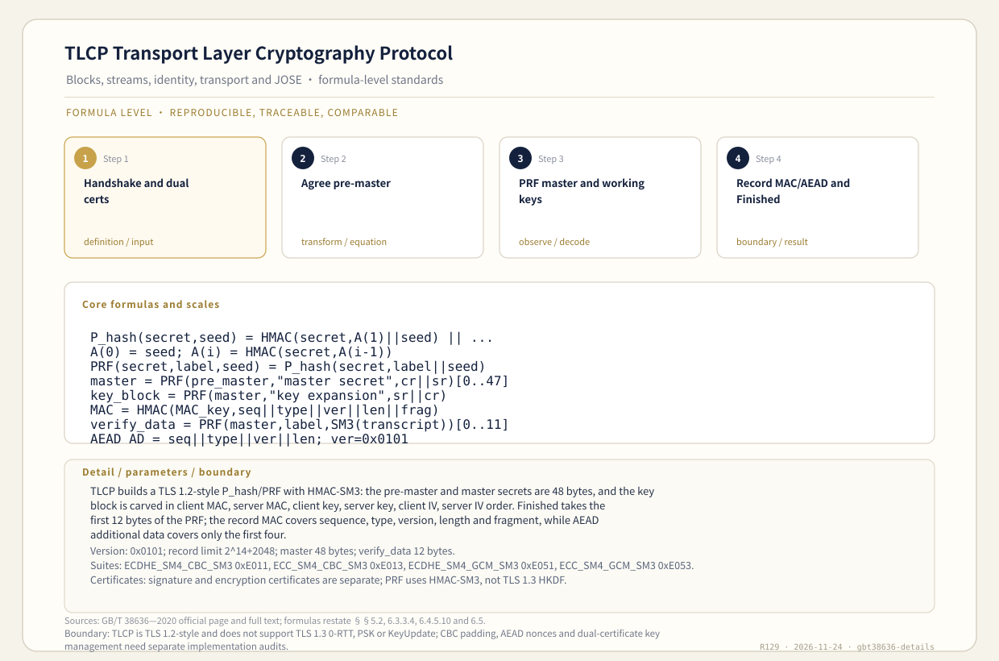
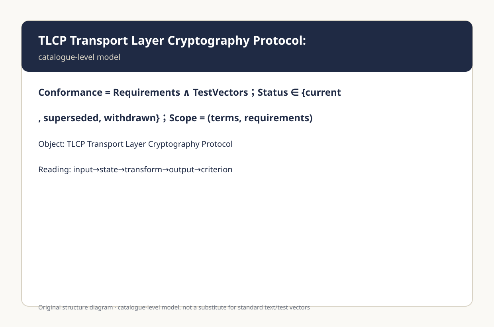

Principles
Standard: TLCP (传输层密码协议). TLCP key calculation is TLS 1.2-style. First (P_hash(secret,seed)=HMAC(secret,A_1|seed)|HMAC(secret,A_2|seed)|\cdots), with (A_0=seed) and (A_i=HMAC(secret,A_{i-1})); then (PRF(secret,label,seed)=P_hash(secret,label|seed)). The master secret is (PRF(pre_master,\text{“master secret”},client_random|server_random)[0..47]), exactly 48 bytes. The key block is (PRF(master,\text{“key expansion”},server_random|client_random)), carved in client MAC, server MAC, client key, server key, client IV, server IV order. Finished takes (verify_data=PRF(master,label,SM3(handshake_messages))[0..11]), exactly 12 bytes. The record MAC covers (seq|type|version|length|fragment); AEAD additional data covers (seq|type|version|length).

Why it matters
TLCP is often mistaken for a “Chinese TLS 1.3”. Its version field is 0x0101 and its key schedule is TLS 1.2 PRF/P_hash, not HKDF; it uses SM2 for authentication and key exchange, SM3 for hashing and SM4 for record encryption. Dual certificates are another key difference: the signature certificate is only for authentication and the encryption certificate only for key exchange; they cannot be merged. Writing PRF, key_block, Finished and record MAC as formulas is how “Chinese TLS” is separated from TLS 1.3.
Applications
When reading a handshake, check version 0x0101 and the suite ID, verify the signature certificate, then use the encryption certificate to recover the pre-master. Both sides compute the 48-byte master from (client_random), (server_random) and the pre-master, then the key_block; the carving order must not be reversed. For CBC records, the MAC covers sequence through fragment; for GCM, additional data covers only sequence, type, version and length, while the ciphertext is authenticated by AEAD. Finished hashes the handshake transcript with SM3 and verifies 12 bytes of (verify_data).

Limits & attacks
There are four boundaries. First, TLCP is TLS 1.2-style and does not support TLS 1.3 0-RTT, PSK or KeyUpdate; do not apply HKDF (Extract/Expand). Second, CBC suites must handle padding and MAC-then-Encrypt order correctly or fall into padding-oracle classes; GCM suites need unique nonces. Third, dual certificates require separate signature and encryption private keys; merging them or letting one key serve both uses breaks the standard separation. Fourth, the standard specifies protocol and key calculation, not implementation side channels, certificate lifecycle or deployment audits.
History
GB/T 38636—2020 was published on 2020-04-28 and took effect on 2020-11-01, specifying the record layer, handshake family and key calculation; it positions TLCP as a transport-layer cryptographic protocol for SSL VPN gateways, browsers and similar products. Its suites use SM2/SM3/SM4 and retain RSA/IBC key-exchange branches; this account restates the standard text, not vendor implementations or TLS 1.3 features.
Worked example & verification
Formal model and reproduction steps
[S=\min_i S_i,\quad S_i\in{\text{密钥强度},\text{分组安全},\text{实现安全}}]
TLCP: the registered public parameters, key material or randomness, and message are mapped through the stated transformation to an output checked against the registered criterion. The worked example is a structural reproduction, not a new test vector; parameter ranges, standard versions and implementation details remain source-bound.
References
- Wikipedia search entry for 传输层密码协议. https://zh.wikipedia.org/w/index.php?search=%E4%BC%A0%E8%BE%93%E5%B1%82%E5%AF%86%E7%A0%81%E5%8D%8F%E8%AE%AE
- Handbook of Applied Cryptography (Menezes, van Oorschot, Vanstone). https://www.cacr.math.uwaterloo.ca/hac/